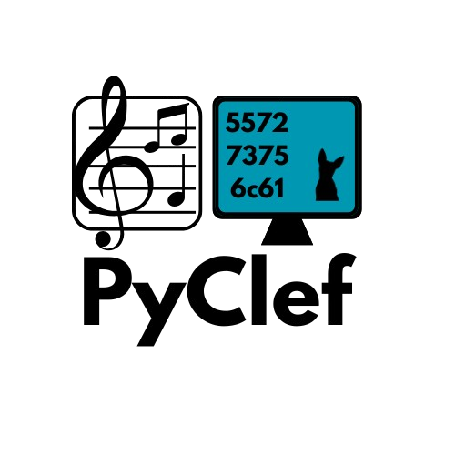

The Future of Sheet Music Digitization.
A high-performance OMR pipeline merging deep learning with digital signal processing principles.
Modern interface developed in PySide6 for real-time interaction.


A high-performance OMR pipeline merging deep learning with digital signal processing principles.
Modern interface developed in PySide6 for real-time interaction.